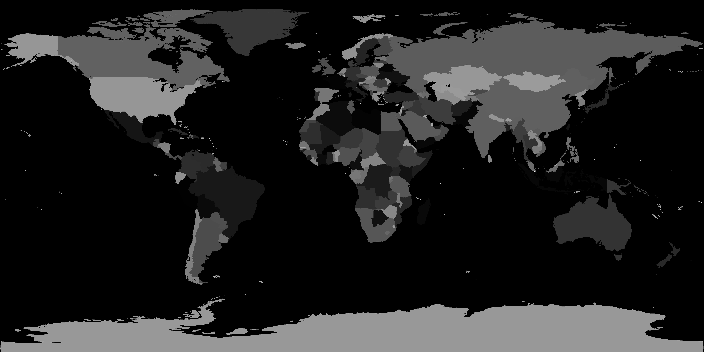

<!DOCTYPE html>
<html>

<head>
    <script src="../js/jquery-1.7.1.min.js"></script>
    <meta charset="utf-8">
    <title>JS Bin</title>
</head>

<body>
    <!-- <canvas width="4096px" height="2048px" style="position:absolute; left:0; top:0; z-index:100;"></canvas> -->
    <!--  -->
    <?xml version="1.0" standalone="no" ?>
    <svg width="4096px" height="2048px" version="1.1" xmlns="http://www.w3.org/2000/svg" style="position:absolute; left:0; top:0; z-index:100; background:black">

        <!-- <path d="M 0.112314 10 L 20 20 L 40 100" /> -->

    </svg>
    <script src="svgimg.js"></script>
</body>

</html>
